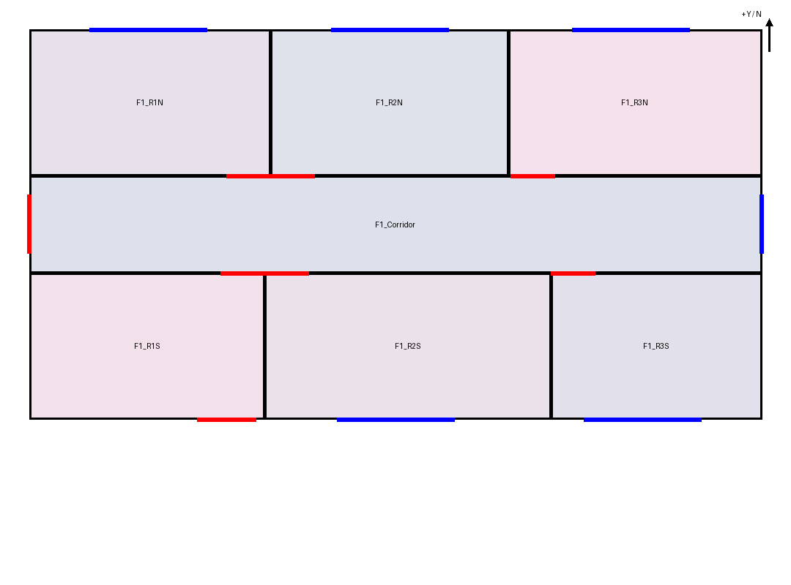
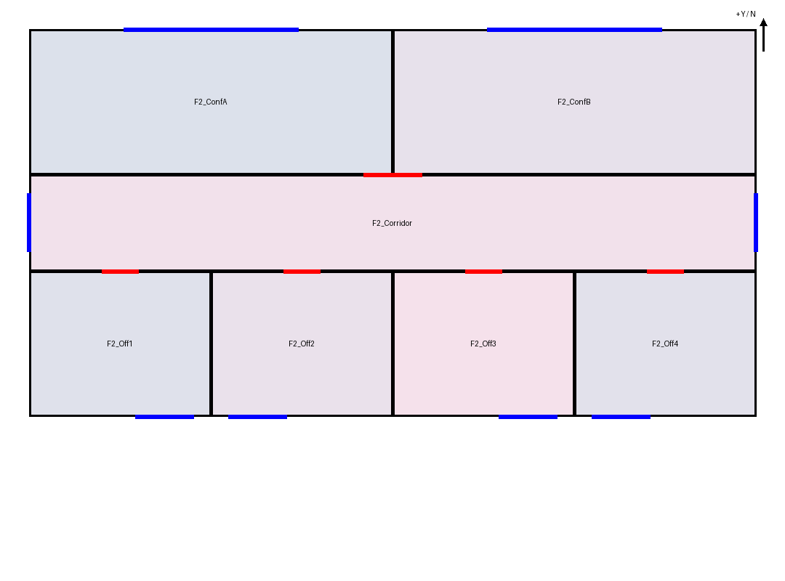

14 个空间 · 14 扇窗 · 14 个门洞。源几何检查通过，但南侧小窗遗漏、入口错位，一层隔墙位置有偏差。两次门洞回查仍需跟进，模型最终文字中的“全部对应”不成立。
本次仅用六张原图，未提供保存方案或定向答案。约 10 分钟内生成三版候选，不算独立冷启动成功。生产原始报告保持不变，以下为事后评价；门的精确宽度、位置和高度仍含推断。
打开最终三维候选 · 独立分区/窗比较 · 事后原图复核 · 运行证据与限制 · 源 BIM JSON
| 候选 | 空间 / 窗 / 已建门 | 实际状态 |
|---|---|---|
| 01 | 14 / 14 / 8 | 二层 6 门高度错误，未建成 |
| 02 | 14 / 14 / 14 | 根据反馈修好门高度，原图差异仍在 |
| 03 最终 | 14 / 14 / 14 | 仅改假设与未决事项，几何与 02 相同 |
两张候选平面均为模型实际查看的 candidate_02。已逐项确认最终 candidate_03 的物理几何不变，未将旧回查重新绑定到新摘要。


一层左侧高门与右边低小窗是两个独立开口；模型把门放到了小窗位置并漏建小窗。


